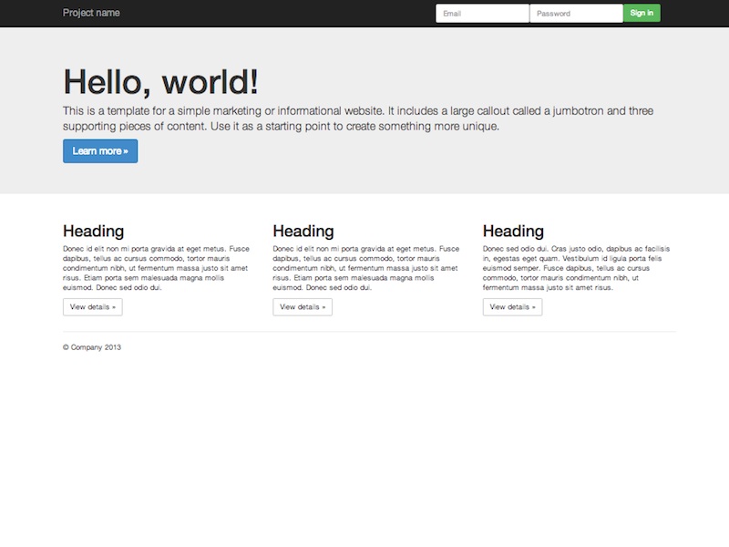
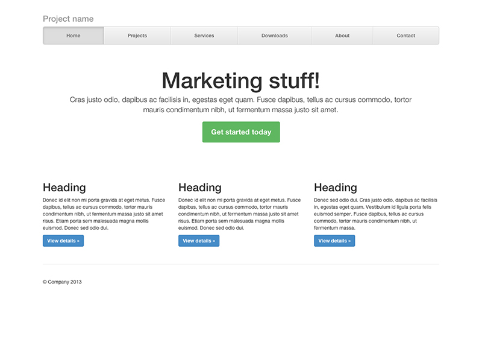

Examples that focus on implementing uses of built-in components provided by Bootstrap.

Starter template
Nothing but the basics: compiled CSS and JavaScript.

Grids
Multiple examples of grid layouts with all four tiers, nesting, and more.

Jumbotron
Build around the jumbotron with a navbar and some basic grid columns.

Narrow jumbotron
Build a more custom page by narrowing the default container and jumbotron.
Taking the default navbar component and showing how it can be moved, placed, and extended.
Brand new components and templates to help folks quickly get started with Bootstrap and demonstrate best practices for adding onto the framework.

Album
Simple one-page template for photo galleries, portfolios, and more.

Cover
A one-page template for building simple and beautiful home pages.

Carousel
Customize the navbar and carousel, then add some new components.

Blog
Simple two-column blog layout with custom navigation, header, and type.

Dashboard
Basic admin dashboard shell with fixed sidebar and navbar.

Sign-in page
Custom form layout and design for a simple sign in form.

Justified nav
Create a custom navbar with justified links. Heads up! Not too Safari friendly.

Sticky footer
Attach a footer to the bottom of the viewport when the content is shorter than it.

Sticky footer w/ navbar
Attach a footer to the bottom of the viewport with a fixed top navbar.
Examples that focus on future-friendly features or techniques.